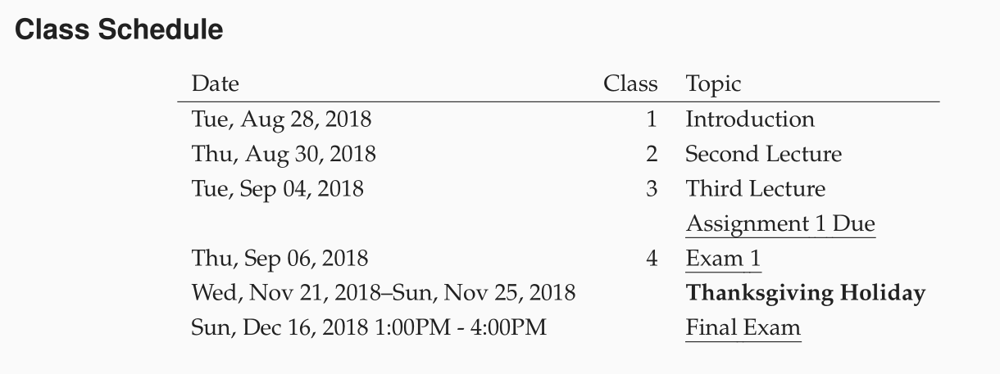

Class 1: Introduction¶
ORG 0000 Joon H. Ro & Jae-Eun Namkoong Class 1 [2018-08-28 Tue]
1 Introduction to Org-Coursepack¶
The Org-Coursepack provides a template for developing and managing teaching materials using Org mode, a major mode in GNU Emacs.
1.1 Advantages for Instructors¶
- First, Org mode and modular design allow for more effective and efficient
content creation.
- Content updates get propagated across courses, semesters, and sections, minimizing the potential for inconsistencies
- Minimizes redundancy when sharing content across courses, semesters, and sections
- Second, instructors can enjoy the benefits of having a flexible export system and an output-specific export option.
- Consistent content across multiple output formats
- Slides (e.g., via reveal.js or Beamer backends)
- Handouts (e.g., via the LaTeX or reStructuredText backends)
- Selective formatting and presentation of components depending on output format
- Consistent content across multiple output formats
- Third, the template contains a) utility functions written in Emacs Lisp, b)
shortcuts to Org mode functions, and c) pre-built tree structures, which
allow automation of many tasks including:
- Automatic class numbering
- Automatic creation of key content including (but not limited to)
- course schedule for syllabi;
- agenda of lecture materials; and
- exam keys.
1.2 Advantages for Students¶
- Consistent, properly-formatted, and strategically presented course materials add to student engagement
- Availability of materials that are easier to digest and review outside the classroom
1.3 Requirements¶
Org-Coursepack is a tool based on Org mode, a major mode in GNU Emacs. It does not, however, require extensive previous experience with either, unless the user wants to make changes to pre-built scripts. The basic level of knowledge needed is:
- Emacs
Basic knowledge of text editing using Emacs
- Org mode
Basic knowledge of Org mode markup syntax. Org mode uses a straightforward markup language similar to Markdown and reStructuredText, thus it will be easy to learn for any user who is familiar with other markup languages.
2 Quickstart Guide¶
In this quickstart guide, we will guide you through how to create your course
with Org-Coursepack with step-by-step examples. We focus on syllabi and lectures,
as they tend to make up for the majority of the course content, and other parts such as
assignments and exams can be created similarly.
2.1 Copy and rename Template course¶
We use / as the root path of Org-Coursepack throughout this quickstart
guide. Make a copy of the Template directory inside /Courses folder and
rename the folder and template.org inside the folder to your course name. We
call this Org-Coursepack-Quickstart-Guide in this tutorial:

Your specific course for a semester will reside inside Semester folder. We
assume that you are preparing a course for the fall 2018 semester – let’s
rename the folder and Semestor.org inside the folder to 2018 Fall and
2018 Fall.org, respectively. From this semester Org file you will be
exporting your actual course content.

2.2 Set local variables permission in semester Org file¶
Visit (i.e., open) 2018 Fall.org. First time you visit this file, it will
show you the following warning about local variables:
The local variables list in 201 Fall.org
contains values that may not be safe (*), and variables that are risky (**)
These variables have time-format settings, as well as
org-confirm-elisp-link-function: nil, which allows you to click on links
(mainly for exporting) without being asked to confirm. You can type ! to set
them permanently for your convenience.
Then you will see that the file is open and it has a template to construct a course for this semester:

You can freely move around with movement keys. Drawers (e.g., :LOCALSETUP:)
and subtrees (e.g., \* Sections) under the cursor can be expanded and
collapsed by pressing Tab key:

2.3 Rename paths to semester and course Org files for #+INCLUDE statements¶
The semester Org file has many #+INCLUDE statements which refer to the
semester Org itself and the course Org file. We should rename paths to these
files so #+INCLUDE statements work property.
First, you should replace all occurrences of ./Semester.org:: with the name
of the current semester Org file, ./2018 Fall.org::. This can be achieved in
Emacs by pressing M-% (Alt+Shift+5, or via Edit -> Replace -> Replace String menu), and inputting ./Semester.org::<Enter> followed by ./2018 Fall.org::<Enter>, and pressing ! (replace all). Emacs will let you know
how many replaces it has done. The query replace will look like the following:
Query replace ./Semester.org with: ./2018 Fall.org
So all ./Semester.org:: are replaced by ./2018 Fall.org:::


Then, replace ../Template.org:: with the name of your course Org file in the
same way. In this quickstart guide,
Query replace ../Template.org:: with: ../Org-Coursepack-Quickstart-Guide.org::
So all ../Template.org:: are replaced by ../Org-Coursepack-Quickstart-Guide.org:::


2.4 Inputting course information¶
The first several lines of the semester Org file (2018 Fall.org) contain
multiple course information values, such as the #+TITLE: and
#+DESCRIPTION:. Also, You can press Tab key while your cursor is on
:COURSE_INFO: to expand the drawer, revealing other information such as
COURSE and SEMESTER. They currently have filler values:

You can fill them with relevant information:

2.5 Preparing your syllabus¶
2.5.1 Exporting syllabus¶
Let’s prepare your syllabus. First, let’s see how the output looks like by
exporting the current syllabus. Navigate to \* Sections/01/Syllabus subtree.
You can expand and collapse subtrees by pressing Tab key. Expand
:PROPERTIES: of the \* Sections/01/Syllabus subtree by pressing Tab. It
has built-in clickable links for LaTeX export LaTeX (Custom Time Format).
Clicking on this link (see the screenshot below) will export the syllabus for
the section 1 to the Syllabus sub-directory.

Once export is finished, clicking on the PDF link will open the exported
output in your default pdf viewer:
from \* Syllabus subtree, but it used section-specific information from
:PROPERTIES: of the section subtree, as shown below.

2.5.2 Editing syllabus content¶
While the syllabus will be exported from this semester Org file (2018 Fall.org), any course-specific content common across semesters, such as the
course description, are stored in the course Org file
(Org-Coursepack-Quickstart-Guide.org).
Let’s modify the course description. Navigate to \* Syllabus/Course Description. When you expand Course Description subtree (see the screenshot
below), you will see that it just includes the content from the course Org
file (../Org-Coursepack-Quickstart-Guide.org). Hence we are assuming that
you will be using the common course description across semesters, but you can
organize your content flexibility with Org-Coursepack, so you can just add
semester-specific description here. You can even mix and match the two
approaches. For example, you can include the common part and then write
semester-specific part below the #+INCLUDE statement.

While the cursor is on the #+INCLUDE statement (see the screenshot above),
you can press C-c ' (CTRL+C followed by ') to visit the file
included. You can modify the content there so it reflects the description of
your course. We add the following content there:

Now if you again click on the LaTeX export button in the :PROPERTIES: of the Syllabus
tree in the semester Org file (2018 Fall.org), you will see that the new course description
is reflected in the exported pdf.
We will go to the class schedule section since users can modify other sections in the same way.
2.5.3 Class Schedule¶
Class Schedule section needs more explanation since Org-Coursepack is
designed to automatically generate the schedule of classes for your syllabus
from the list of classes. Here we will discuss only schedule-related part of
the lectures, and describe how to change actual lecture content in the next
section.
Lecture and Assignment Dates
Let’s take a look at the \* Lectures/Lecture and Assignment Dates subtree.
Here, currently 4 assignment due dates and 28 class dates are defined. You can
adjust these dates following your teaching schedule. These dates will be used
when we update lecture information. Org mode provides a convenient way to
adjust dates. For instance, when the cursor is on a timestamp, one can easily
adjust dates by pressing Up and Down keys with Shift key.
Adding Lectures Under the subtree Lectures, subtrees with skipcount tag
are not actual lectures, they are either subtrees which have auxiliary
information (dates, etc) or ones that are for non-lecture events such as
assignment deadlines or holidays. Currently it has only one lecture,
Introduction:
ㅚㅗ.. image:: ../../../Assets/Images/Org-Teaching/Quickstart_Lectures-Lectures.png
Let’s add additional two lectures by copying & pasting the Introduction
subtree. Then, let’s change the name of these lecture subtrees. We will simply
call them Second Lecture and Third Lecture:

Updating Lecture Information When you expand :PROPERTIES: of the Second Lecture, you will notice that it has multiple information that needs to be
updated, such as CLASS, EXPORT_FILE_NAME, and DATE. Org-Coursepack
provides a convenient script Update Lecture Information written in
Emacs-lisp which update these values as well as other elements of lectures
that depend on the schedule (e.g., agenda of the current and the previous
lectures) automatically.
Move your cursor to the script named Update Lecture Information, which is
located right under the Lectures subtree headline. You can run this script
by C-c C-c (CTRL+c and c while pressing CTRL down).

Emacs will ask to confirm, and you can press y key to do so.

Upon running the script, you will notice that the rendering of the subtrees are broken:

You can simple press Shift+Tab to collapse all the subtrees to reset the rendering.
Now let’s inspect :PROPERTIES: for the Second Lecture again. Press Tab
key to expand :PROPERTIES::

As you can see, the script has updated information for the second (and the
third) lecture appropriately. The class number reflects the order of the
subtree. Then, the script grabs the corresponding date from the date specified
in \* Lectures/Lecture and Assignment Dates. It also extract the name of the
lecture from the subtree headline, and then use it and the class number to
construct EXPORT_FILE_NAME. The script also does other things, which we will
describe in the next section. For non-lecture items, you can tag them with
skipcount tag and the script will ignore them. You can edit tags of a headline
with C-c q (CTRL+c and q while pressing CTRL down).
Updating Schedule Now we are ready to update the class schedule in
Syllabus. Navigate to \* Syllabus/Class Schedule, and then place your cursor
to the line starting with #+BEGIN: columnview. If you expand the columnview,
you will see that it has a table with previous classes.

Pressing C-c C-c will update the table:
As you can see, the columnview automatically extract relevant information from each lecture subtree in creating the table. Hence, the user can freely re-organize lectures and change their names without worrying about updating lecture information or class schedule manually.
Of course, the updated schedule will be reflected when the user export the syllabus for a section:
2.6 Preparing your lectures¶
2.6.1 Exporting slides and handouts¶
Similar to Syllabus subtree under each section subtree, a lecture subtree
has built-in export links available. You can click on reveal.js and LaTeX
links to export the lecture to slide and handout formats, respectively.

Let’s export the lecture to both reveal.js and LaTeX output formats. The files
will be exported to Lectures sub-directory of the semester folder. Clicking
on HTML and PDF links will open the corresponding exported file.
The following two screenshots show the exported outputs, where it is showing the slide overview for the reveal.js slides:


As you can see, the sections with slideonly (handoutonly) tag are not
exported in LaTeX (reveal.js) output. You can easily specify any content you
want to show in slides (e.g., announcements) or handouts (extended explanations)
only in this way.
Also, note that the contents for Last Class and Lecture Agenda under
Introduction section, and Class Summary section are automatically written
by Update Lecture Information script described earlier. Hence, users can
freely edit lecture content and the order of lectures without worrying about
tediously fixing these boilerplate parts. For example, after changing the
order of lectures, the user can simply run the script and the Last Class
slide of each lecture will correctly point to the previous lecture in the new
order.
See Exporting Slides and Handouts for more information about exporting content, including setting up a key binding, which is convenient for repeated exporting.
2.6.2 Editing lecture content¶
Let’s add additional section to the lecture. Add a subtree called New section as the same
level as other sections (\*\*\* New section).

You can freely use Org markup language, which is similar to other popular
markup languages such as Markdown and reStructuredText, to create your
content. The main differences are in Org mode, \* is used to specify levels
of headings, and headings can have data associated with them in the form of
:PROPERTIES: and tags. In addition, navigating through a long document is
convenient because all headings and drawers are collapsible.
We show examples of several basic use cases here. For detailed instructions, see Creating Content for Slides and Handouts section of the documentation and Org manual.
Lists Obviously you cannot use \* to specify a list, but otherwise Org mode
uses a typical syntax (- or + for lists, 1. for numbered lists) for
lists. For example,

Math you can directly input LaTeX math in Org mode. For example,

Slide split in general, reveal.js will automatically create slide structure
from the lecture subtree. Sometimes, however, users might want to split a
slide into multiple slides. Users can put #+REVEAL: split to split a
slide. For example,

Fragmented contents Fragmented contents such as lists can be easily
specified by putting #+ATTR_REVEAL: :frag (appear) before a list. For example:

Images Prepending file: to an image file path is sufficient to include a
local image to both slide and handout. For HTML, specifying URL is
sufficient for an image on the web. Note that using a relative path
(../../../Assets/Images/) is recommended for portability. To make the image
path consistent across LaTeX and HTML outputs, <base href”../”>= is set in
/Assets/setup_Macros.org.
One can also add HTML (e.g., #+ATTR_HTML: :width 80%) and LaTeX
(e.g., #+ATTR_LATEX: :width 6cm) attributes before an image link to adjust the
size of the image.
For example,

Hiding specific content in addition to using slideonly and handoutonly
tags to selectively include specific subtree in export, since Org mode allows
embedding raw HTML and LaTeX code, it is easy to hide specific content based
on output format. Content surrounded by #+LATEX: \iffalse and #+LATEX: \fi
will not be shown in LaTeX outputs, and that surrounded by #+REVEAL_HTML: <span hidden> and #+REVEAL_HTML: </span> will not be shown in reveal.js
output. For example,

The following screenshots show how they are exported:


2.6.3 Make contents reusable¶
One of the biggest advantage of using Org-Coursepack to prepare course
content is that users can put content in topic Org files, and include relevant
part in semester Org files as needed, leveraging Org mode’s flexible inclusion
functionality. Putting contents on a central location and reusing them reduce
redundancy and managing them easier. For example, any improvements on content
will be applied to all courses automatically, and users can put topic Org
files into version control and keep track of the improvements.
The following shows an example usage:

Note that it is optional - users can put all course content to a semester Org file directly. In fact, it is more convenient to do so when a course is actively developed with new contents. We recommend, however, users to start putting contents into relevant topic Org files as course content becomes more stabilized. See Lectures part of the documentation for more information.
2.7 Conclusion¶
That is it! See the slide deck and the handout generated with the above examples.
3 Overview of the Directory Structure¶
We present the directory structure of Org-Coursepack.
- /Assets
This folder contains:
- Org setup files, which include frequently used macros (e.g., for LaTex formatting).
- Supplementary course materials (if any), such as images, videos, or articles, for storage and access.
- /Assets/Institutions
- This folder contains an institution Org file that includes institution-specific information (e.g., university policies); may have multiple Org files if teaching across multiple institutions.
- /Courses
- Each unique course will have a subdirectory under
Courses. A course is defined as a series of lectures occupying a given adademic calendar unit referred to as a semester. Same courses may be offered across multiple semesters. Note that a course may also have multiple sections in the same semester; for example, a Statistics 101 course may be offered to three different sets of students per semester. - /Courses/Course
This folder contains:
- A course Org file that includes permanent information about the course that remains consistent across semesters (e.g., syllabus items such as learning objectives, grading schemes).
- A subfolder for each semester this course is taught.
- /Courses/Course/Semester
Each semester folder contains:
- A semester Org file that includes information about the course that varies by semester (e.g., classroom location, course schedule, assignment due dates). The semester Org file also pulls information from other Org files, such as course, topic, and institution Org files, to complete the course development for that semester. In other words, this is the master file that compiles all course materials for exporting.
- Subfolders are for exported course materials (if any) and are divided by type; i.e., Assignments, Lectures, Exams, and Syllabus.
- /Topics
- This folder contains a topic Org file for each topic; these files are where course content (e.g., lecture slides and notes, exam questions, assignment guidelines) about specific topics are stored and accessed.
3.1 Example¶
The following example is the directory structure of this course, Org-Coursepack, as well as the template.
\
|
+---Assets
| | setup_Macros.org
| |
| +---Institutions
| JOSE.org
| Template.org
|
+---Courses
| +---Org-Coursepack
| | | Org-Coursepack.org
| | |
| | +---2018 Fall
| | | 2018 Fall.org
| | |
| | +---Assignments
| | | | Assignment 1.pdf
| | | | Assignment 1.tex
| | |
| | +---Lectures
| | | | 01 Introduction.pdf
| | | | 01 Introduction.tex
| | |
| | +---Exams
| | | | Exam 1.pdf
| | | | Exam 1.tex
| | |
| | +---Syllabus
| | Syllabus (Section 1).pdf
| | Syllabus (Section 1).tex
| |
| +---Template
| | Template.org
| |
| +---Semester
| | Semester.org
| |
| +---Assignments
| | | Assignment_1.pdf
| | | Assignment_1.tex
| |
| +---Exams
| +---Lectures
| | | 01 Introduction.pdf
| | | 01 Introduction.tex
| | |
| |
| +---Syllabus
| | Syllabus (Section 1).pdf
| | Syllabus (Section 1).tex
|
+---Topics
| Org-Teaching.org